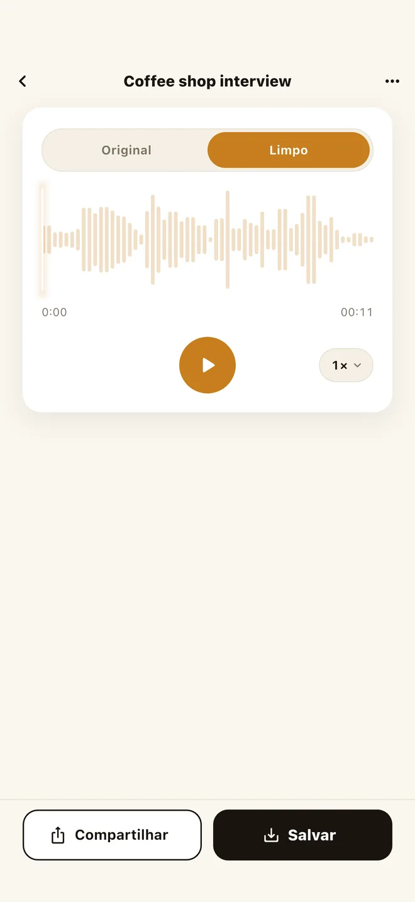

Resumo rápido
As quatro coisas que a maioria das pessoas quer saber primeiro. Todos os detalhes, com as fontes, estão na tabela completa logo abaixo.
| App | Sem upload | Sem conta | Funciona offline | Salva de graça |
|---|---|---|---|---|
| NoisyNo | ✓Sim | ✓Sim | ✓Sim | ✓Sim |
| Denoise | ✓Sim | –Não informado | –Não informado | Pago |
| Denoise.FX | ✓Sim | –Não informado | ✓Sim | –Não informado |
| Audio Cleaner | ✓Sim | –Não informado | –Não informado | –Não informado |
| PureVoice | ✓Sim | –Não informado | ✓Sim | Anunciado como grátis |
| NoiseKill | ✓Sim | ✓Sim | ✓Sim | Com anúncios |
| Offline AI Video Noise Remover | ✓Sim | ✓Sim | ✓Sim | 2 por dia |
| Adobe Podcast | ✗Não | ✗Não | ✗Não | 1 hora por dia |
| LALAL.AI | ✗Não | ✗Não | Não no celular | Só prévias |
✓ sim · ✗ não · – não informado pelo fabricante
A tabela completa
Os mesmos nove apps, com os detalhes por trás de cada resposta. Os sete primeiros limpam no celular; os dois últimos são serviços em nuvem. Os preços são os da App Store e do Google Play dos EUA ou do fabricante, e, quando o fabricante não diz algo, a célula indica não informado.
Role a tabela para o lado para ver todas as colunas →
Apps para remover ruído conforme a descrição dos próprios fabricantes, verificado em 26 de novembro de 2026. Os números sobrescritos levam às fontes.
| App | Envia seu áudio para um servidor? | Exige conta? | Modelo de preço | Plataformas | O que é grátis / limites de exportação | Funciona offline? | Limpa vídeo? |
|---|---|---|---|---|---|---|---|
| A limpeza roda no aparelho | |||||||
| NoisyNoGrayForge (este site) | Não. Os arquivos são limpos no aparelho; os diagnósticos limitados não incluem nomes de arquivos nem áudio.12 | Não.13 | Download grátis; remoção de ruído grátis em qualquer duração. Pro: compra única, sem assinatura: $5.99 no iPhone, iPad e Android; $7.99 no Mac, comprado à parte.23 | iPhone, iPad (iOS 15+), Mac (macOS 13.4+), Android234 | Áudio limpo em M4A (AAC), grátis, em qualquer duração. WAV sem perdas, vídeo limpo, lote, normalização de loudness e corte exigem o Pro.12 | Sim, depois de instalado.13 | Sim. No grátis, salva o áudio limpo; com o Pro, devolve o clipe como vídeo, trocando só o som.2 |
| Denoise: AI Noise RemoverRoutes Software SRL | Não. A página da loja diz que nada é enviado.5 | Não informado5 | Download grátis. 3 exportações por $1.99, ou Denoise Pro: $14.99 vitalício ou assinatura mensal.5 | iPhone, iPad (iOS 17+), Mac com Apple Silicon5 | Limpar e ouvir é grátis. Salvar ou compartilhar exige o Pro ou um pacote de exportações. M4A, WAV ou vídeo.5 | Não informado; tudo roda no aparelho.5 | Sim.5 |
| Denoise.FX for Audio & VideoAndrey Ivankin | Não. O processamento é no aparelho.6 | Não informado6 | Download grátis. Itens Premium: semanal ($3.99 ou $4.99), “Early” ($29.99 ou $39.99) e vitalício ($39.99 ou $49.99).6 | iPhone (iOS 15+), Mac com Apple Silicon6 | Não diz o que é grátis. Salva o áudio no formato que você escolher e os vídeos de volta no app Fotos.6 | Sim; não precisa de conexão com a internet.6 | Sim.6 |
| Audio Cleaner: AI DenoiseKnotSmith Ltd. | Não. A remoção de ruído roda localmente no iPhone.7 | Não informado7 | Download grátis. Premium: $3.99/semana, $9.99/ano ou $19.99 vitalício, além de outros itens Premium de $2.99 a $7.99.7 | iPhone (iOS 18+), Mac com Apple Silicon7 | Não diz o que é grátis. Exporta MP3, WAV, AAC, M4A e vídeo MP4 ou MOV.7 | Não informado; o processamento roda no aparelho.7 | Sim.7 |
| Noise Reducer, PureVoiceOWLMYST | Não. As páginas das lojas dizem que o áudio nunca sai do aparelho.89 | Não informado89 | Download grátis. A página diz que todos os recursos são grátis; a App Store também oferece uma compra Lifetime de $19.99.89 | iPhone (iOS 15.6+), Mac com Apple Silicon, Android89 | Diz processar áudios de qualquer duração. MP3, WAV, M4A. Não diz o que o Lifetime libera.89 | Sim.89 | Não informado89 |
| NoiseKill: AI Noise RemoverShahLabs | Não. A página da loja diz que nada vai para um servidor.10 | Não.10 | Grátis, mantido por anúncios. Nenhuma compra no app listada.10 | Celulares e tablets Android, Chromebooks, Android TV10 | Grátis, sem marca d'água. Os arquivos limpos vão para a galeria.10 | Sim.10 | Sim; MP4, MOV, MKV.10 |
| Offline AI Video Noise RemoverAreeb Labs | Não. O app não tem permissão de acesso à internet.11 | Não.11 | Grátis. Pro: compra única, sem assinatura.11 | Android11 | Grátis: 2 salvamentos por dia na duração total, sem marca d'água. Pro: salvamentos ilimitados. Vídeo MP4, áudio M4A.11 | Sim.11 | Sim; a imagem é copiada sem alterações.11 |
| A limpeza roda na nuvem | |||||||
| Adobe Podcast Enhance SpeechAdobe, app web | Sim. Você envia os arquivos para o app web.12 | Sim; o plano grátis começa com um cadastro.12 | Plano grátis. Plano Firefly Pro (inclui o Adobe Podcast Premium): $9.99/mês nos primeiros 6 meses, numa oferta que termina em 6 de dezembro.12 | Navegador web12 | Grátis: só áudio, um arquivo por vez, até 30 minutos e 500 MB, 1 hora por dia. Pago: arquivos de até 2 horas e 1 GB, 4 horas por dia.12 | Não; roda na web.12 | Só no plano pago (MP4, MOV e outros)12 |
| LALAL.AI Voice Cleanerlalal.ai | Sim. Os apps de celular dizem que todo o processamento roda nos servidores em nuvem do LALAL.AI.131415 | Sim.1314 | Starter grátis (10 minutos). Lite $90/ano, Pro $180/ano. Recargas avulsas a partir de $50.16 | iPhone, iPad, Android, web, desktop131416 | O plano grátis só permite prévias; baixar o resultado completo exige plano pago. Arquivos de até 200 MB no grátis, 2 GB no pago.1316 | Não no iPhone e no Android.1314 | Sim na web: MP4, MOV, MKV, AVI, M4V.15 |
As páginas das lojas mudam com frequência. Os rótulos de Privacidade do App e as seções de Segurança dos dados são preenchidos pelos próprios desenvolvedores; a Apple avisa que os seus rótulos não são verificados.
Como verificamos
A GrayForge faz o NoisyNo, então leve isso em conta ao ler esta página. Cada fato sobre outro app vem da página dele na App Store ou no Google Play dos EUA ou do site do fabricante, lidos em 26 de novembro de 2026; nada vem de sites de review nem de avaliações de usuários. Não passamos a mesma gravação por todos os apps, então a página não os classifica pela limpeza do resultado. Todos os apps daqui são grátis para baixar ou testar, então você pode ouvir a diferença por conta própria.
NoisyNo, grátis e Pro
A remoção de ruído é grátis em qualquer duração, sem conta, e o áudio limpo é salvo em M4A (AAC). O Pro é uma compra única, sem assinatura: $5.99 no iPhone, iPad e Android, e $7.99 na versão para Mac, que é comprada à parte.23



O Pro adiciona exportação do vídeo limpo, WAV de 16 bits sem perdas, processamento em lote, normalização de loudness para os alvos de audiolivro (−18 LUFS), podcast (−16 LUFS) ou vídeo e streaming (−14 LUFS), e corte antes da limpeza.2
O que a tabela não mostra
- O NoisyNo tira a camada constante de ruído de baixo da voz (zumbido, chiado, ventiladores, ar-condicionado, vento, som ambiente, trânsito) e é ajustado para fala, não para música. Dos apps que rodam no aparelho listados aqui, só o NoisyNo e o PureVoice estão tanto na App Store quanto no Google Play.12 O passo a passo no aparelho mostra o fluxo completo.
- O Denoise tem o kit de ferramentas mais completo: também reduz o eco da sala, equilibra o volume, limpa enquanto você grava, edita, encurta pausas longas, separa voz de música e vende tempo de transcrição.5
- O Denoise.FX é o mais avaliado dos apps de iPhone que rodam no aparelho listados aqui (4,5 estrelas em 435 avaliações nos EUA). Dá para ajustar o algoritmo manualmente e adicionar filtros de frequência, e o rótulo de privacidade lista histórico de compras e um ID de usuário como dados vinculados a você.6
- O Audio Cleaner tem um controle de intensidade com comparação de antes e depois, além de EQ, efeitos e presets, e consegue receber arquivos de um computador pelo Wi-Fi.7
- O PureVoice diz nas duas lojas que nenhum dado é coletado, mas as duas páginas foram atualizadas pela última vez em agosto de 2025.89
- O NoiseKill toca uma prévia A/B curta antes de limpar o arquivo inteiro, com os ajustes Gentle, Balanced e Strong. É um app pequeno, com mais de 100 downloads.10
- O Offline AI Video Noise Remover deixa você segurar para ouvir o original durante a reprodução e tem um reforço de voz para falas baixas. É novo: a versão atual é o primeiro lançamento.11
- O plano pago do Adobe Podcast vem com o plano Firefly Pro da Adobe e adiciona vídeo, envio em lote e um ajuste de intensidade. O nosso comparativo do Gravador do iPhone fala dele junto com o Kapwing.12
- O Voice Cleaner do LALAL.AI também remove música de fundo, ronco de microfone e plosivas, e tem um ajuste De-Echo.15
Também vale a pena conhecer: o Auphonic, um serviço web para podcasters que reduz ruído e reverberação, grátis por 2 horas por mês com uma vinheta1718; o Audio Noise Remover & Reducer no iPhone, grátis e com o rótulo “Dados Não Coletados”, mas só para iOS 2619; e, no Android, o Noise Reducer: Clean Audio, que não declara nenhuma permissão20, e o NoiseFix21. No iPhone, a opção Enhance Recording do próprio app Gravador é tratada na nossa página Enhance do Gravador vs NoisyNo.
Qual usar em cada caso
- Você quer um arquivo limpo para guardar ou enviar, de graça. O NoisyNo salva o áudio limpo em M4A em qualquer duração, sem pagar. No Android, o NoiseKill (com anúncios) e o Offline AI Video Noise Remover (dois salvamentos por dia) também são grátis.
- A voz está num vídeo e você precisa do vídeo de volta. O NoiseKill e o Offline AI Video Noise Remover salvam vídeo de graça no Android. No iPhone, o Denoise salva vídeo depois de uma compra, assim como o NoisyNo com o Pro; o Denoise.FX e o Audio Cleaner também salvam vídeo, mas não dizem o que é grátis.
- Você quer editar além de limpar. O Denoise grava, corta, junta, encurta pausas e transcreve; o Audio Cleaner adiciona EQ e presets.
- Você usa um iPhone e um Android, ou um Mac. O NoisyNo roda nos três; o PureVoice também está nas duas lojas, mas não é atualizado desde agosto de 2025.
- A gravação é confidencial, como uma reunião, uma entrevista ou uma consulta médica: qualquer um dos apps que rodam no aparelho mantém o arquivo longe dos servidores de outras empresas. Leia mais em limpar uma reunião gravada.
- Você está num computador em que não pode instalar apps e o áudio não é sensível: Adobe Podcast ou LALAL.AI no navegador. Conte com cadastro, upload e os limites do plano grátis.
Confira você mesmo se é offline
As páginas das lojas são escritas por quem vende o app, inclusive a nossa. Dois minutos dizem mais:
- Ative o modo avião com o Wi-Fi desligado e limpe uma gravação curta. Se terminar, o trabalho rodou no seu celular.
- Uma tela de login antes do processamento significa que os seus arquivos ficam ligados a uma conta. Leia a política de privacidade para ver o que acontece com eles.
- Leia a seção de privacidade (Privacidade do App na App Store, Segurança dos dados no Google Play), lembrando que as duas são preenchidas pelo desenvolvedor.
O ruído que nunca foi gravado não precisa ser removido. Afaste-se de ventiladores e aparelhos de ar-condicionado, aproxime o celular de quem está falando e, no iPhone, experimente o Voice Isolation (isolamento de voz) enquanto grava.
Perguntas frequentes
Quais apps para remover ruído funcionam offline?
NoisyNo, Denoise.FX e PureVoice no iPhone, e NoisyNo, NoiseKill, Offline AI Video Noise Remover e PureVoice no Android, dizem limpar as gravações sem conexão com a internet. O Denoise e o Audio Cleaner dizem que tudo roda no aparelho, mas não usam a palavra offline. O Adobe Podcast e os apps de celular do LALAL.AI processam os arquivos nos próprios servidores.
Existe app grátis para remover ruído sem marca d'água nem limite para salvar?
O NoisyNo salva o áudio limpo em M4A de graça, em qualquer duração, sem conta. No Android, o NoiseKill é grátis com anúncios e sem marca d'água, e o Offline AI Video Noise Remover salva dois arquivos por dia de graça. O Denoise cobra para salvar, o plano grátis do Adobe Podcast permite 1 hora de áudio por dia e o plano grátis do LALAL.AI só mostra prévias dos resultados.
O Adobe Podcast e o LALAL.AI enviam a minha gravação para a nuvem?
Sim. O Adobe Podcast Enhance Speech trabalha com arquivos que você envia depois de se cadastrar, e as páginas do LALAL.AI para iOS e Android dizem que todo o processamento roda nos servidores em nuvem da empresa e exige conta.
O NoisyNo é grátis?
Sim. A remoção de ruído é grátis em qualquer duração, salva em M4A, sem conta. O Pro é uma compra única, $5.99 no iPhone, iPad e Android e $7.99 na versão para Mac, que adiciona exportação de vídeo, WAV, processamento em lote, normalização de loudness e corte.
Fontes
Todas as páginas foram lidas em 26 de novembro de 2026. Os preços são os valores dos EUA mostrados nessas páginas naquele dia.
- NoisyNo product page (GrayForge) · https://grayforge.app/noisyno/Processamento no aparelho, sem conta, funciona offline depois de instalado, formatos, recursos Pro, sem assinatura, plataformas. Verificado em 2026-11-26.
- GrayForge llms.txt, NoisyNo section · https://grayforge.app/llms.txtO que ele remove, ajustado para fala e não para música, formatos de entrada e saída, tratamento de vídeo com e sem o Pro, recursos e preços únicos do Pro, compra separada do Pro no Mac. Verificado em 2026-11-26.
- NoisyNo: Voice Noise Remover, App Store (US) · https://apps.apple.com/us/app/id6772728543Compras no app (NoisyNo Pro $5.99 e $7.99 na versão para Mac), requisitos de iOS 15, iPadOS 15 e macOS 13.4, sem uploads e sem contas. Verificado em 2026-11-26.
- NoisyNo: Voice Noise Remover, Google Play (US) · https://play.google.com/store/apps/details?id=com.grayforge.noisynoPágina do Android, modelo no aparelho, sem nuvem e sem contas. Verificado em 2026-11-26.
- Denoise: AI Noise Remover, App Store (US) · https://apps.apple.com/us/app/id946423200Nada é enviado, roda no aparelho, limpar e ouvir de graça, Pro ou pacote de exportações para salvar, preços das compras no app, exportação em M4A/WAV/vídeo, recursos de edição e transcrição, compatibilidade. Verificado em 2026-11-26.
- Denoise.FX for Audio & Video, App Store (US) · https://apps.apple.com/us/app/id1623119654Processamento no aparelho sem precisar de internet, preços das compras no app, suporte a vídeo, modos da versão 3.0, compatibilidade, avaliações, rótulo de Privacidade do App. Verificado em 2026-11-26.
- Audio Cleaner: AI Denoise, App Store (US) · https://apps.apple.com/us/app/id6751505212A remoção de ruído roda localmente, preços das compras no app, formatos de exportação, suporte a vídeo, EQ e presets, requisito de iOS 18. Verificado em 2026-11-26.
- Noise Reducer, PureVoice, App Store (US) · https://apps.apple.com/us/app/id6748527663Offline, sem uploads, Lifetime $19.99, texto “todos os recursos grátis”, MP3/WAV/M4A, compatibilidade, rótulo Dados Não Coletados, última atualização em agosto de 2025. Verificado em 2026-11-26.
- Noise Reducer, PureVoice, Google Play (US) · https://play.google.com/store/apps/details?id=com.owlmyst.ai.purvoiceOffline, sem uploads, compras no app, nenhum dado coletado, atualizado em 27 de agosto de 2025. Verificado em 2026-11-26.
- NoiseKill: AI Noise Remover, Google Play (US) · https://play.google.com/store/apps/details?id=com.mcore.noisekillNo aparelho, sem precisar de internet, sem conta, sem marca d'água, contém anúncios, formatos de vídeo e áudio, dispositivos compatíveis, seção de Segurança dos dados. Verificado em 2026-11-26.
- Offline AI Video Noise Remover, Google Play (US) · https://play.google.com/store/apps/details?id=com.areeblabs.noiseremoverSem permissão de internet, sem cadastro, grátis (2 salvamentos por dia) e Pro em compra única, saída em MP4 e M4A, primeiro lançamento. Verificado em 2026-11-26.
- Adobe Podcast plans · https://podcast.adobe.com/en/plansLimites do plano grátis e do plano Firefly Pro para o Enhance Speech, cadastro, envio de um arquivo por vez, vídeo no plano pago, oferta de $9.99/mês nos primeiros 6 meses até 6 de dezembro. Verificado em 2026-11-26.
- LALAL.AI for iOS · https://www.lalal.ai/ios-app/O processamento roda nos servidores em nuvem do LALAL.AI, internet e conta obrigatórias, plano grátis só com prévias, iPhone e iPad. Verificado em 2026-11-26.
- LALAL.AI for Android · https://www.lalal.ai/android-app/O processamento roda nos servidores em nuvem do LALAL.AI, internet e conta obrigatórias, remoção de ruído e de música de fundo. Verificado em 2026-11-26.
- LALAL.AI Voice Cleaner · https://www.lalal.ai/voice-cleaner/Serviço online, upload obrigatório, o que ele remove, ajuste De-Echo, formatos de vídeo. Verificado em 2026-11-26.
- LALAL.AI pricing · https://www.lalal.ai/pricing/Planos Starter, Lite e Pro, limites de tamanho de upload, recargas avulsas. Verificado em 2026-11-26.
- Auphonic pricing · https://auphonic.com/pricing2 horas grátis por mês com uma vinheta, créditos recorrentes a partir de $11 por mês no plano anual, créditos avulsos a partir de $12 por 5 horas, redução de ruído e de reverberação em todos os planos. Verificado em 2026-11-26.
- Auphonic help, Production · https://auphonic.com/help/web/production.htmlEnvio pelo navegador, por link ou de serviços externos; arquivos de áudio guardados só por um número limitado de dias; ajustes de redução de ruído e de reverberação. Verificado em 2026-11-26.
- Audio Noise Remover & Reducer, App Store (US) · https://apps.apple.com/us/app/id6782887119Grátis, sem conta, sem acesso à rede, vídeo e áudio, rótulo Dados Não Coletados, requisito de iOS 26. Verificado em 2026-11-26.
- Noise Reducer: Clean Audio, Google Play (US) · https://play.google.com/store/apps/details?id=noise.reducerModelo embutido, sem conta, sem permissões, sem anúncios, saída em WAV, só ruído constante, sem lote. Verificado em 2026-11-26.
- NoiseFix: offline AI Denoiser, Google Play (US) · https://play.google.com/store/apps/details?id=io.cyberfly.noisefixOffline, sem conta, opção de compra única, feito para voz e não para música, nenhum dado coletado. Verificado em 2026-11-26.
NoisyNo — Voice Noise Remover
Remove zumbido, chiado, barulho de ventilador, vento e som ambiente de gravações de voz e do áudio de vídeos, no seu aparelho. Sem upload, sem conta, e a remoção de ruído é grátis para qualquer duração.
Avise e a gente corrige a tabela.
As páginas das lojas mudam. Se algum preço, plataforma ou limite acima estiver desatualizado, inclusive sobre o NoisyNo, mande uma mensagem com o link e a tabela será corrigida.
grayforge.dev@gmail.com